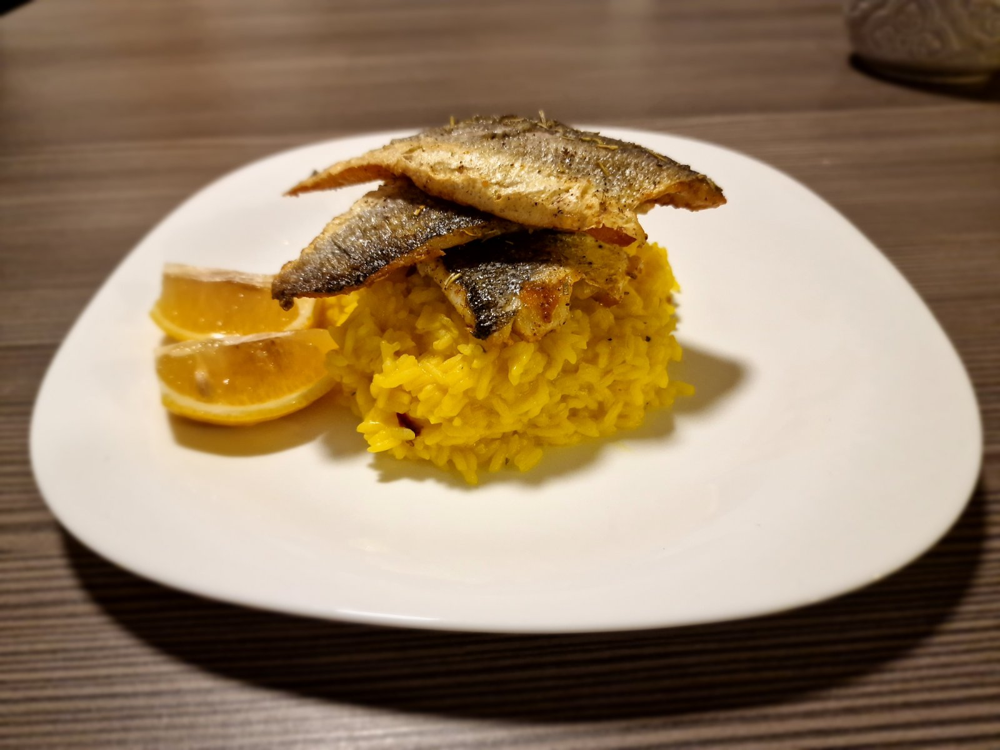

Grilled sea bass

This is one plain, fast, delicious and really easy recipe. But you get everything you need for building muscles.
Tons of minerals and most important omega-3 fat oils.
Plenty of protein,
almost none of fats, and some vitamins too. Enjoy!
List of ingredients: (for 1 person)
- 200g of sea bass fillet
- 100g of brown or white rice
- 1tbsp of olive oil
- 1/4 lemon
- spices
- I reccomend himalayan salt, peppercorns, rosemary, lemon juice. Vegeta, turmeric or curry for rice.
Meal preparation:
- Put 100g of rice in cooking pot, double the water of rice amount. exmp. 1 cup of rice=2 cups of water
- Salt it
- Season your fish. I put peppercorns, himalayan salt and rosemary. You can do this few hour earlier, it will taste better
- Heat pan with 1tbsp of olive oil in it and put fish to cook. You cook skin side first.
- Cook it on medium fire, 3-5minutes and turn it on other side. Skin should be a little bit chrispy by now.
- Cook it for 5 more minutes max.
- Rice should be almost done by now, 3 minutes before its over, put seasoning in rice. I prefer turmeric and vegeta (season mix).
- Boil it untill there's no water.
- Serve the fish and rice on plate, and squeese 1/4 of lemon on fish if you want.
- Enjoy your meal!
Macros:
- 723kcal
- 55g of protein
- 80g of carbohydrates
- 20g of fats
Back to main page